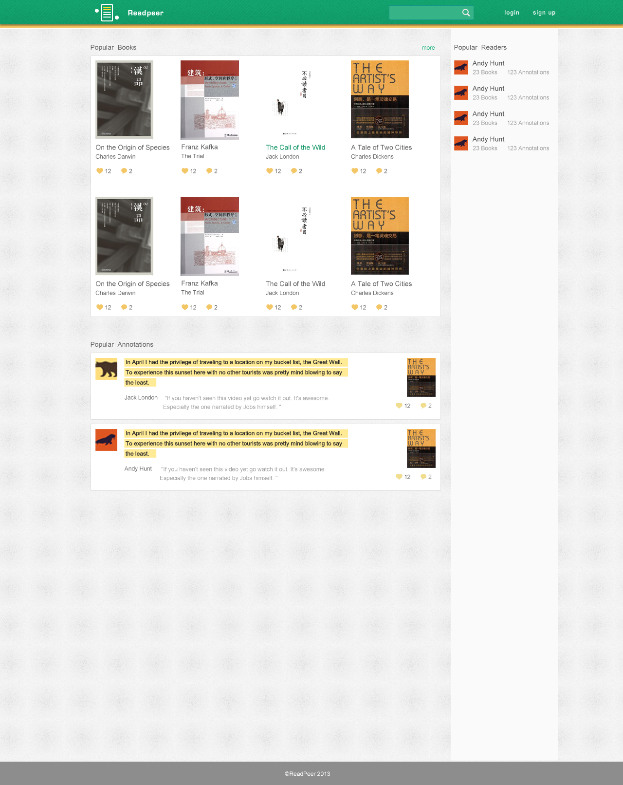
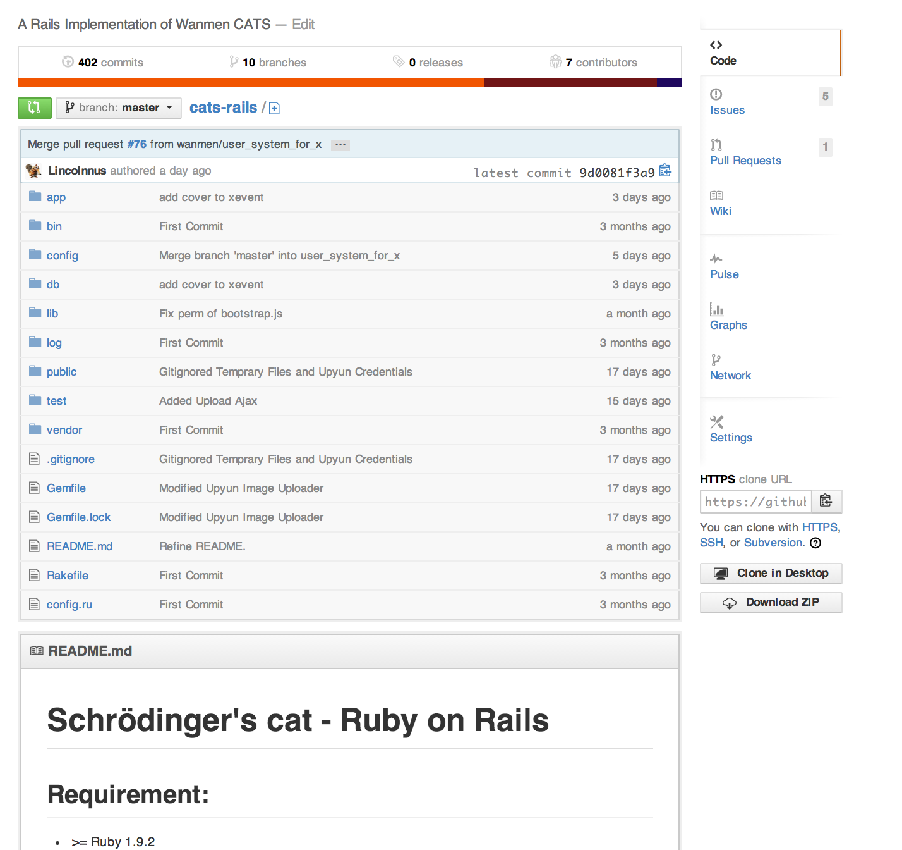
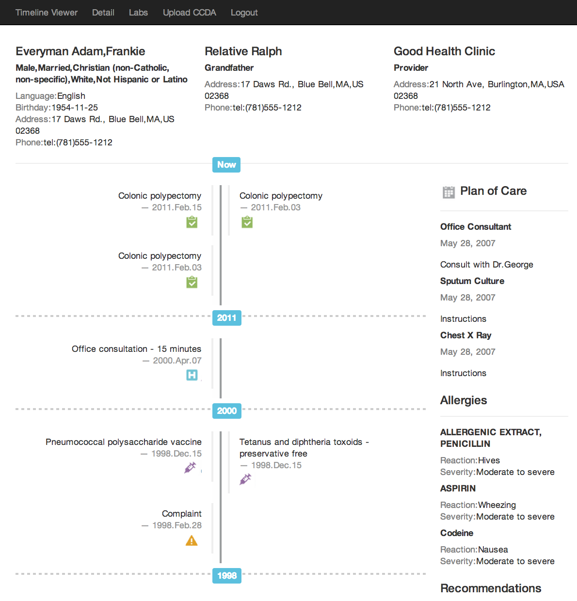
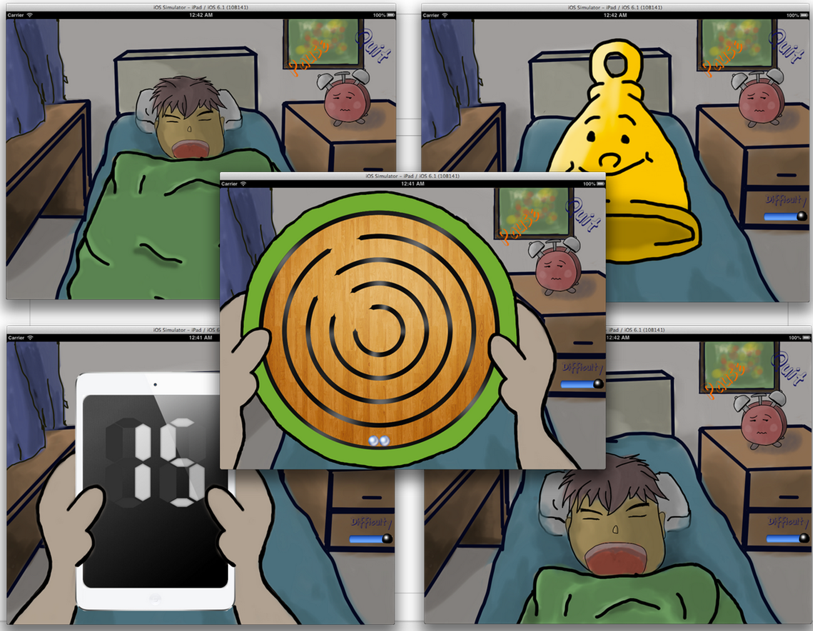
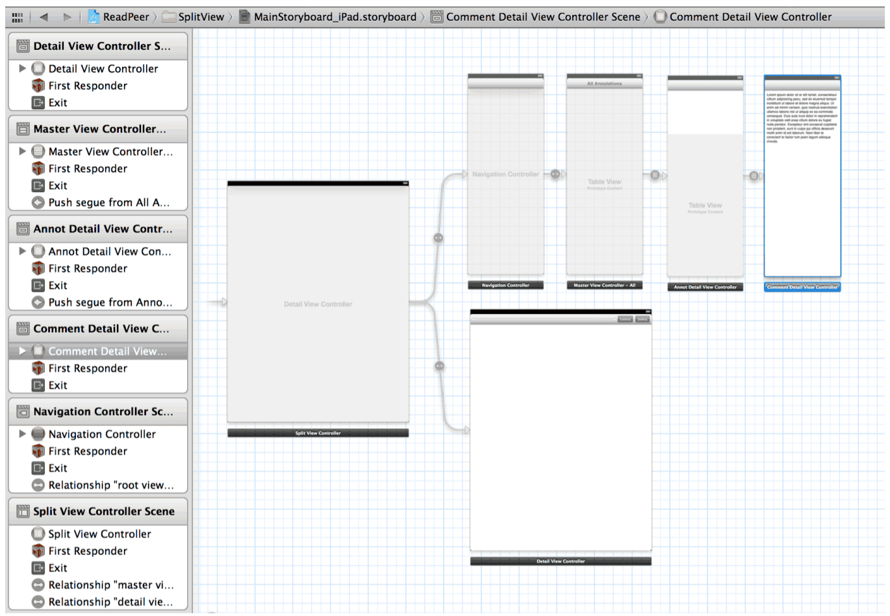
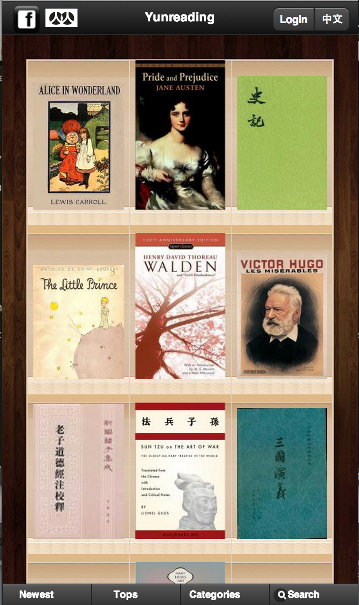

Implemented the front end UI using Bootstrap and Angular.js.

Designed and implemented the backend content management system in Ruby on Rails for a Non-Profitable educational institute named Wanmen University in China.

Designed and implemented the timeline viewer for patients based on Node.js, Bootstrap and Ejs.

Designed and Implemented a cool iPad social alarm clock with 3 other IOS developers using Objective C and XCode 4.

Developed a HTML5 Canvas annotation tool for doctors to draw annotations on large biomedical images. Designed the database for efficiently store biomedical images and annotation data.
Designed and implemented an annotation system that provides cloud service for sharing annotations on ebooks and technical publications using Drupal and PDF.js. Developed an iPad application to make use of the annotation web service using Objective C and XCode 4.

Participated in the Million Song Dataset Challenge to predict which song a user will listen to next using Python. In charge of the lyrics information retrieval (text information retrieval) in a 4-member team.
Developed a HTML5 Cloud Ebook Reader to syncronize reading history between different devices. In charge of the Restful API and social network service integration in a 4-member team.

Developed a 3D graphics simulation for a quadruped robotics research project. Simulated the kinematics and trajectory planning of the quadruped robot using C# and Microsoft Robotics Studio.